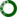

Software Libraries
Following a list of my open-source bioinformatics tools.
- HEMDAG. An R software library implementing several Hierarchical Ensemble Methods (HEMs) for Directed Acyclic Graphs (DAGs). ; ; ; .
- obogaf::parser. A Perl5 module to parse obo (Open Biological and Biomedical Ontology) and gaf (Gene Association File) file. ; ; ; .